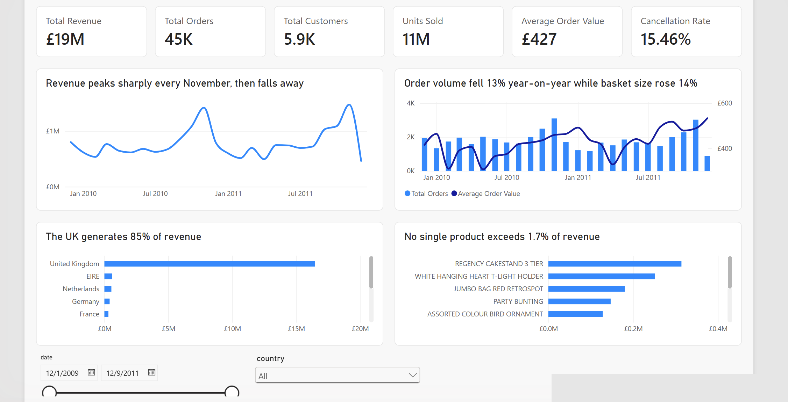
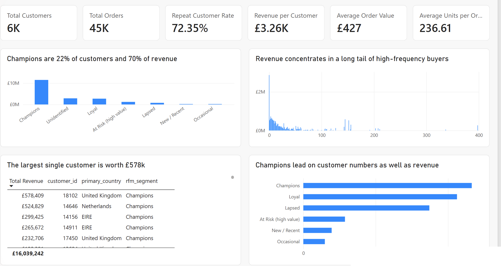
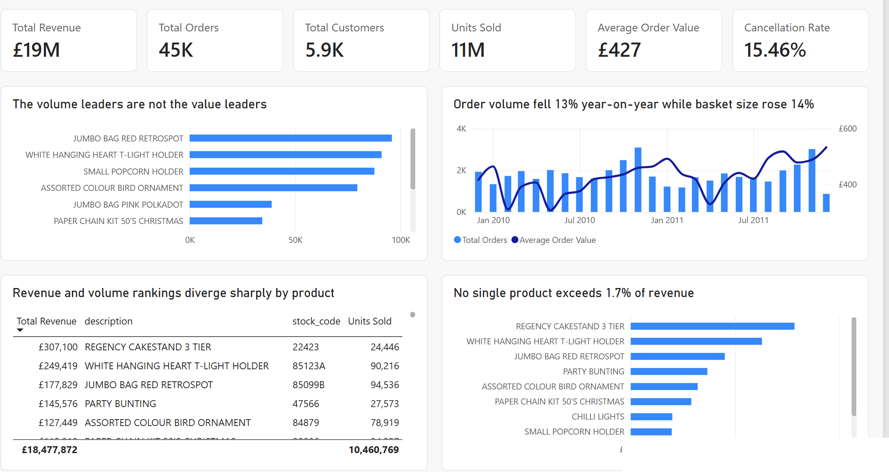
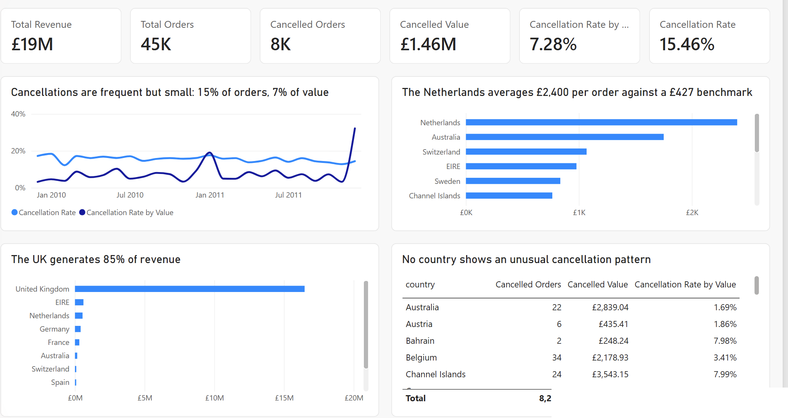

Overview
The dataset is the UCI Online Retail II file: every invoice line from an anonymous UK online retailer across 2009 to 2011, just over a million rows. I loaded it into PostgreSQL, wrote the cleaning logic, modelled it into a star schema, and built the analytical views. On top of that sits a four-page Power BI dashboard covering an executive overview, customers, products and sales, and geography and cancellations, with around 15 DAX measures and an RFM customer segmentation.
Because the data is transactions and nothing else (no cost, no margin, no marketing spend, no reason codes on cancellations), every finding is a statement about what happened, not why. Where a cause is plausible I flag it as a hypothesis to test rather than a conclusion.




What the data showed
Revenue is flat, but the mix underneath it changed. Comparing like-for-like trading years, net revenue was almost unchanged (down 0.9%) while orders fell 12.8% and average order value rose 13.7%. Revenue held up because baskets got bigger, not because the business did more trade. A headline of "revenue is stable" is true and misleading at the same time.
Acquisition has stalled; the business lives off its existing book. Repeat customers now drive about 96% of revenue, and the number of new customers won fell from 3,368 in 2010 to 1,529 in 2011. The business is trading on relationships it already has rather than winning new ones.
Customer concentration is severe; product concentration is not. The top 1% of customers (59 of them) generate 31% of attributable revenue, and the largest single customer is 3.5% on their own. Products are the opposite: no single product exceeds 1.7% of revenue. So the risk sits in who buys, not in what they buy, and losing a top customer hurts far more than losing a top product.
Repeat business is almost the whole business. 72% of customers who ever ordered came back, and customers with ten or more orders are 16% of the base but 68% of revenue. An RFM segmentation puts 392 high-value customers in an "at risk" group: people who averaged around £3,000 each and haven't ordered in roughly a year.
International orders are worth about twice UK orders, but the book is thin. International average order value is £813 against £394 domestic, yet 42 countries produce only 533 identified customers, and single markets rest on a handful of accounts (EIRE's revenue comes from five customers). That is concentration risk sitting inside what looks like headroom.
Cancellations are frequent but small. 15.5% of invoices are cancellations, but only 7.3% of gross value, because cancelled orders are systematically smaller. With no reason codes in the data, the dashboard can show where cancellations happen, not why.
Recommendations
Four, in priority order, each written as insight, implication, action. The language is deliberately tentative, because this data supports investigation rather than promises.
- Treat the order-count decline as the headline, not revenue. Report orders and AOV as headline KPIs alongside revenue every month, and work out whether the AOV rise came from price, mix, or fewer-but-larger wholesale orders.
- Protect the top percentile before chasing new segments. Retention is essentially the whole commercial model here, so put named ownership on the top 1% and treat a gap in their normal order cadence as an escalation.
- Test reactivation on the 392 at-risk high-value customers. Run a structured test on a sample, hold the rest back as a control, and measure the response rather than assuming the roughly £1.2m of dormant revenue is recoverable.
- Check whether the high-AOV international accounts can be grown deliberately. Profile the Netherlands, EIRE and Australia accounts first. If they are repeatable distributor relationships, test acquisition in similar markets; if they are one-offs, stop treating international AOV as an opportunity metric.
How it was built
The raw file goes into PostgreSQL, then a cleaning layer handles returns and cancellations, missing customer IDs, zero and negative prices, and duplicate lines, with every rule documented rather than silently dropping rows. The cleaned data is modelled into a star schema (a fact table plus date, customer, product and country dimensions), and the analysis runs as SQL views using CTEs, joins and window functions for ranking, running totals and period-on-period growth. Power BI sits on top with the DAX measures, the RFM segmentation and the four dashboard pages.
What it cannot tell you
Worth stating plainly, because a portfolio piece that oversells is worse than one that doesn't. There is no margin data, so a high-revenue customer may be unprofitable. There is no marketing data, so the acquisition decline could be a spend decision rather than a demand signal. Around 23% of lines have no customer ID, so all customer analysis covers the identified population only, stated wherever it appears. And it is two years of one retailer during the post-financial-crisis recovery, so there is no basis for generalisation.